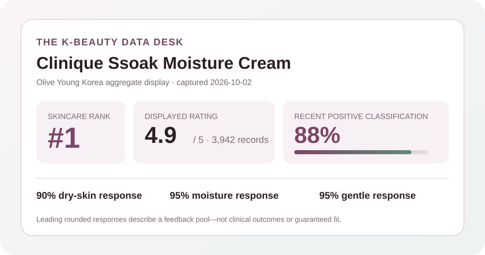
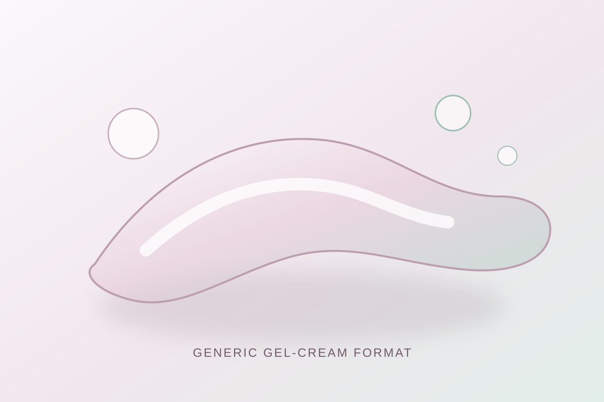

Data captured October 2, 2026. “Ssoak Moisture Cream” is an English rendering of the Korean retailer nickname shown in the listing. This is an independent analysis of retailer-displayed product information and anonymous aggregate review signals. I did not test the product, and no individual review, reviewer name, product photograph, or user photograph is copied or translated.

The short version: the Clinique listing appeared at number 1 in Olive Young Korea's live skincare sales ranking. Its product header and review overview both displayed 4.9 out of 5 from 3,942 review records. The shopper summary led with dry skin at 90%, moisture at 95%, and gentle at 95%. Those are favorable storefront signals, but they do not prove measured hydration, treatment performance, or tolerance for a particular person.
A 4.9 storefront average is a compact satisfaction signal, not a laboratory measurement. It says that the linked scoring pool leaned strongly favorable after the retailer rounded its average to one decimal place. It does not reveal every score, the reasons behind the scores, the duration of use, or whether review participants had comparable routines and expectations.
The review overview repeated the same 3,942 total shown in the product header. That cross-check matters because it reduces the risk of pairing a listing title with a stale or unrelated review count. It still does not establish verified-buyer composition, campaign participation, sampling, moderation rules, geographic mix, or whether every record refers to the same package and promotion.
No reliable star-by-star distribution was exposed in the captured overview. A 4.9 average cannot be reverse-engineered into five-, four-, three-, two-, and one-star shares, because many different distributions can produce the same rounded mean. This analysis therefore reports the average and total without inventing a distribution.
Dry skin was the leading displayed skin-type response at 90%. That is an unusually concentrated representation signal in the retailer summary, but it is not a recommendation score. The page did not show how shoppers defined dry skin, whether their classification changed by season, whether every reviewer answered, or how the remaining responses were divided in the collapsed overview.
Moisture led the displayed concern response at 95%. This label reports what respondents selected in the retailer interface; it is not a corneometer reading, a duration test, or a clinical comparison. It cannot establish how much hydration changed, how long an effect lasted, whether water loss changed, or how the product compared with a different moisturizer.
The irritation summary showed 95% selecting the gentle response. That is favorable perception data, but it cannot guarantee compatibility. The exact denominator was not shown, and the interface does not provide standardized patch conditions, ingredient sensitivities, diagnoses, concurrent products, application amounts, or exposure duration. A high gentle-response share is not the same as zero risk.

The captured Korean listing identifies the item as a 50 ml moisture cream. That supports only a broad moisturizer-format description. I did not open a jar, dispense or spread the product, layer it with sunscreen or makeup, smell it, observe drying time, or compare its slip, tack, cushion, residue, or finish with another cream or gel.
The local visual is deliberately abstract and brand-neutral. It uses translucent ribbons and droplet-like shapes to communicate the general idea of a gel-cream moisturizer without copying a product photograph, package, campaign image, or review photo. The visual should not be used to predict the actual material's appearance or behavior.
The retailer nickname “Ssoak Moisture Cream” is marketing language, not a measurement. “Moisture,” “soak,” and similar wording do not specify a tested hydration change, skin depth, persistence, ingredient amount, or biological mechanism. Ranking and review data cannot validate a performance implication suggested by a name.
The retailer's automated aggregate summary classified 88% of its recent-review subset as positive. It grouped recurring discussion around a fresh or quickly settling finish, moisture impressions, and mild-feeling use. These are broad machine-generated themes from an unspecified recent subset; they are not a manual coding of all 3,942 records and do not prove that every reviewer shared those experiences.
This article does not reproduce, translate, or paraphrase any individual review and does not identify any reviewer. It also does not use product photographs or user photographs. A visible review feed is ranked and selective, so reading a few entries would be a poor basis for estimating frequency. The analysis stays with retailer-provided aggregate values and anonymous grouping.
The captured header showed 50 ml single-item and promotional configurations, a ₩49,000 reference price, and a promotional price beginning at ₩37,240. It also displayed sale, gift, delivery, and reservation-shipping information. Offers, stock, gifts, coupons, option prices, and shipping terms can change, so this is a dated snapshot rather than a permanent value claim.
Rank one means this listing held the top position inside the selected Olive Young Korea skincare sales list at capture time. It does not mean best moisturizer overall, best for dry skin, most reviewed, most effective, or safest. The October promotion, bundle structure, placement, availability, and current demand may all influence rank.
This analysis did not independently capture and reconcile a complete current ingredient list for every option, package, or market. No ingredient concentration, stability, penetration, compatibility, or therapeutic effect is estimated from the product nickname, category, price, rating, polls, themes, or rank.
No claim is made that the item is fragrance-free, alcohol-free, oil-free, non-comedogenic, hypoallergenic, pregnancy-compatible, procedure-compatible, or appropriate for eczema, rosacea, acne, infection, broken skin, or another medical concern. Check the current authorized label for ingredients, directions, cautions, intended use, and storage. For a diagnosed condition, recent procedure, prescription routine, or history of severe reactions, consult a qualified clinician or pharmacist.
The captured product header and review overview both displayed 4.9 out of 5 from 3,942 linked records. That is a strong retailer signal, but it does not establish clinical effectiveness or fit for one person.
Dry skin led the displayed summary at 90%. The value describes representation in the shopper response pool rather than a suitability ranking.
No. It is an aggregate perception response with an unspecified denominator. Individual ingredients, conditions, routines, and exposures differ, and a retailer poll cannot predict personal tolerance.
The captured overview exposed the 4.9 average and 3,942 total but not a reliable star-by-star breakdown. Rather than calculate a fictional distribution, this article records that limitation.
No. It is a local, brand-neutral visual for a general gel-cream concept. It does not reproduce the product or predict its real texture, color, scent, finish, ingredients, or behavior.
Source: Olive Young Korea product listing for the Clinique 50 ml “Ssoak Moisture Cream” single/promotional listing, accessed October 2, 2026. The source is a dynamic retail page; rank, price, availability, gifts, counts, percentages, and themes can change after capture.
This independent article is unaffiliated with Clinique or Olive Young. The store link contains no affiliate tracking identifier, and this site earns no commission from it.
← Back to all posts · Review-volume rankings · Skin-poll representation · Methodology